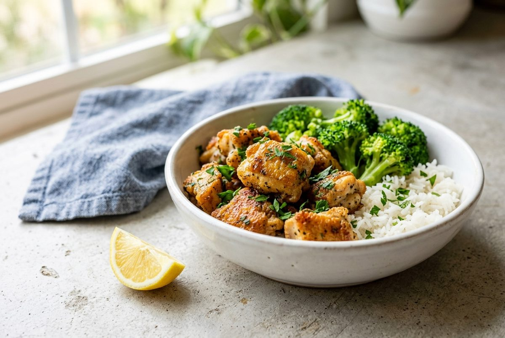
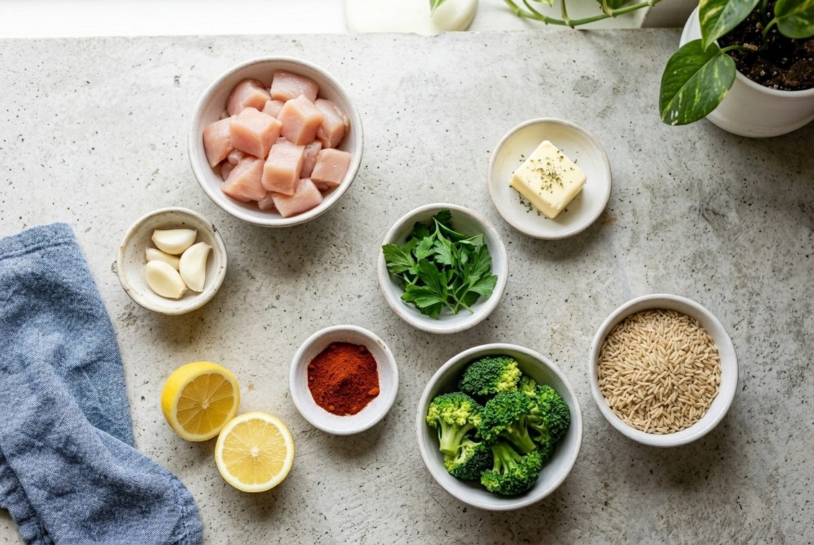
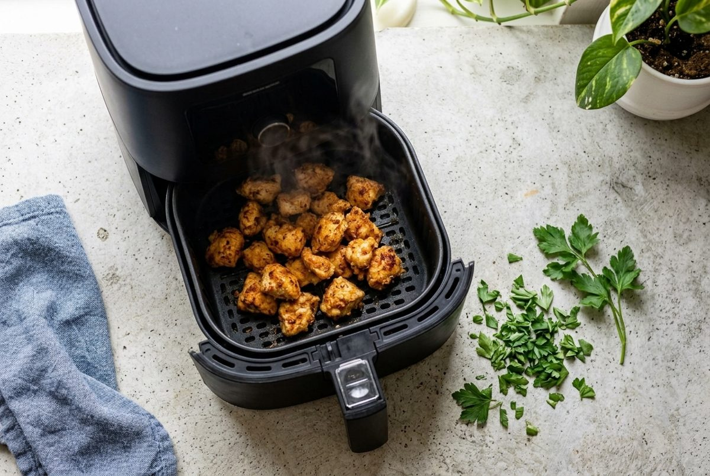
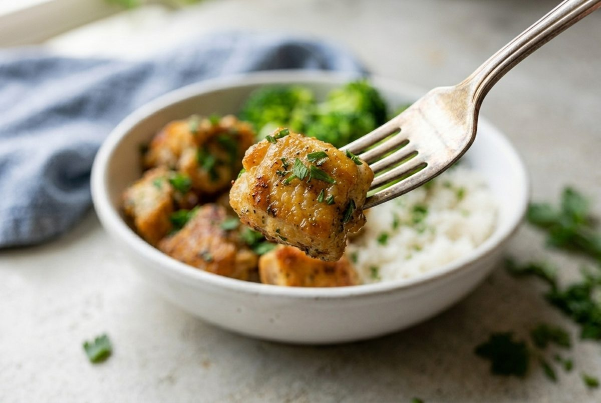
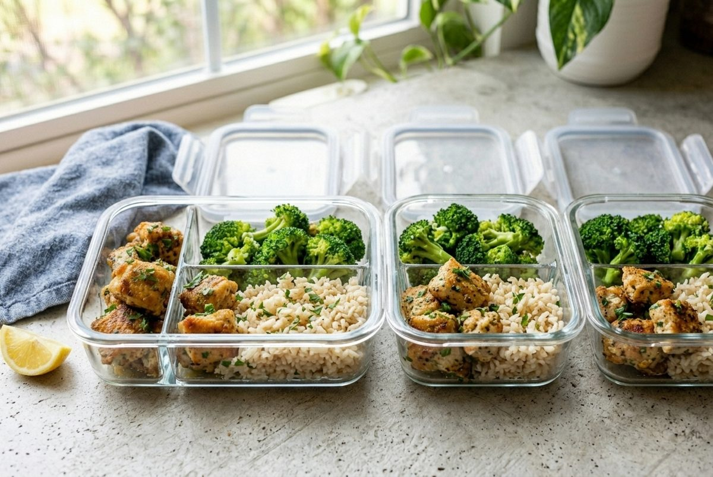

Air Fryer Garlic Butter Chicken Bites (45g Protein Meal Prep)
Per serving (1 container). Nutrition is an estimate and varies with brands.

Air fryer chicken bites cook in about 12 minutes and come out golden and juicy, with a garlic butter finish. They are an easy way to hit a high protein number without much oil.
Each container has 45g protein and 465 calories, with rice and broccoli to round it out. The recipe works well for easy meal prep for work, because the chicken stays tender for days.
No air fryer? The oven method is in the questions below.
Ingredients

- 1.5 lb (680g) boneless skinless chicken breast, cut into 1 inch (2.5cm) pieces
- 1 cup (190g) uncooked rice, brown or white
- 4 cups (350g) broccoli florets
- 2 tbsp (28g) butter, divided
- 4 cloves garlic, minced, divided
- 1 tsp paprika
- 1/2 tsp salt
- 1/4 tsp black pepper
- 1 lemon, half juiced and half cut into wedges
- 2 tbsp (8g) chopped parsley
Instructions
- Cook the rice following the package directions.
- Preheat the air fryer to 400°F (200°C) for 3 minutes. Melt the butter and set it aside.
- Toss the chicken with the paprika, salt, pepper, half the garlic and 1 tbsp of the melted butter.
- Air fry in a single layer for 10 to 12 minutes, shaking the basket halfway, until golden and 165°F (74°C) inside. Cook in two batches if the basket is crowded.

- Stir the remaining garlic into the remaining 1 tbsp butter. Toss with the hot chicken, the lemon juice and the parsley.
- Steam the broccoli for 3 to 4 minutes. Divide the rice, broccoli and chicken across 4 containers and add a lemon wedge.

Meal Prep, Storage and Reheating

- Fridge: keeps for 4 days in airtight containers.
- Reheat: air fry at 350°F (180°C) for 3 minutes to bring back the crisp edges, or microwave for 90 seconds.
- Freezer: freezes for up to 2 months. Thaw overnight in the fridge first.
- Lemon: squeeze it on after reheating.
Quick Questions
Can I make these in the oven? Yes. Bake on a lined tray at 425°F (220°C) for 15 to 18 minutes, turning once.
Can I use chicken thighs? Yes. Boneless skinless thighs work well and stay extra juicy. Cook for 12 to 14 minutes.
Why are my chicken bites dry? The pieces were too small or cooked too long. Use 1 inch (2.5cm) pieces and check at 10 minutes.